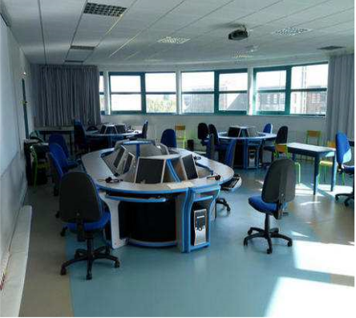
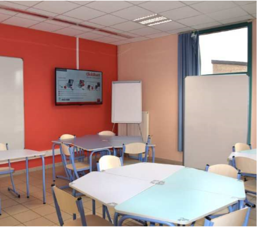

La Maison des langues de l’Université d’Artois est un espace multimédia dédié à l’apprentissage, au perfectionnement et à la pratique des langues étrangères en autoformation guidée.
Ce mode d’apprentissage permet à chaque étudiant de développer en autonomie, à son rythme et selon ses centres d’intérêt des compétences linguistiques orales et écrites.
Son accès est libre et gratuit pour tous les étudiants de l’Université d’Artois, qu’ils soient ou non spécialistes en Langues étrangères.
De nouveaux espaces de formation, les « salles actives », bénéficient d’aménagements innovants comme un tableau numérique interactif, des écrans de projection, un éclairage adapté au travail sur écran, ainsi que des bandeaux électriques et des bancs de charge pour recharger plus facilement les équipements. Ces salles de TD encouragent le travail en équipe grâce à des murs d’expression, un mobilier léger et modulaire et une acoustique soignée. Conçues pour expérimenter des méthodes actives, elles peuvent aussi accueillir des cours traditionnels.